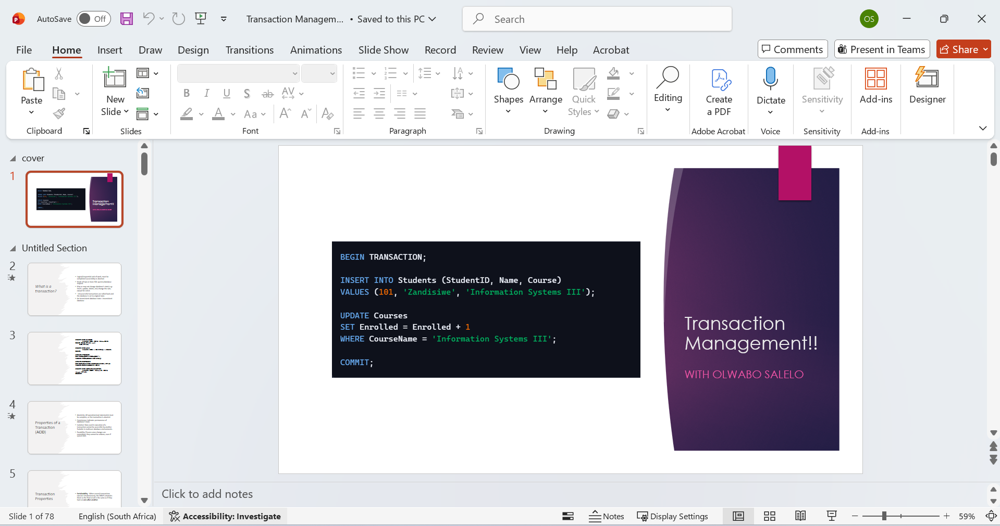
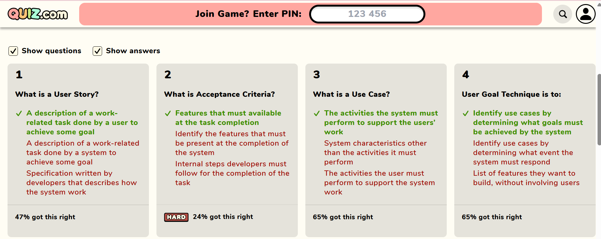
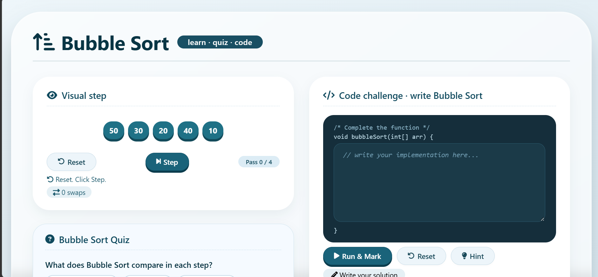
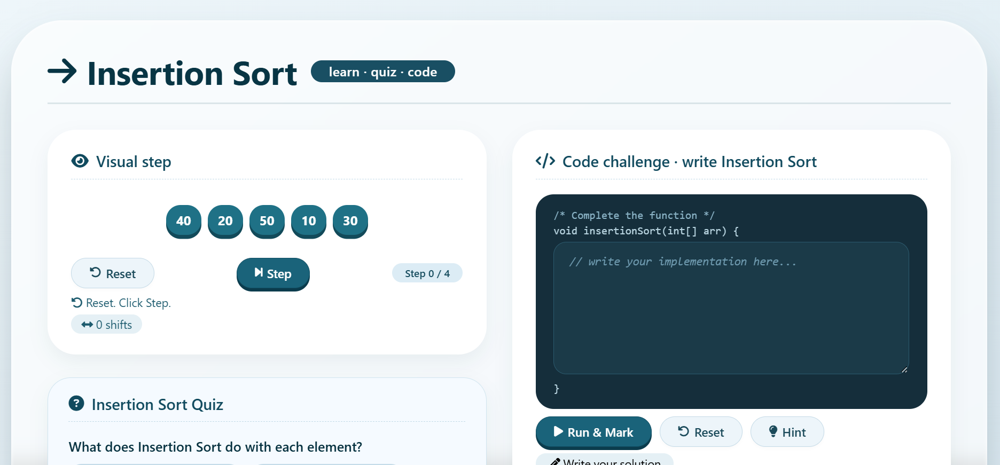
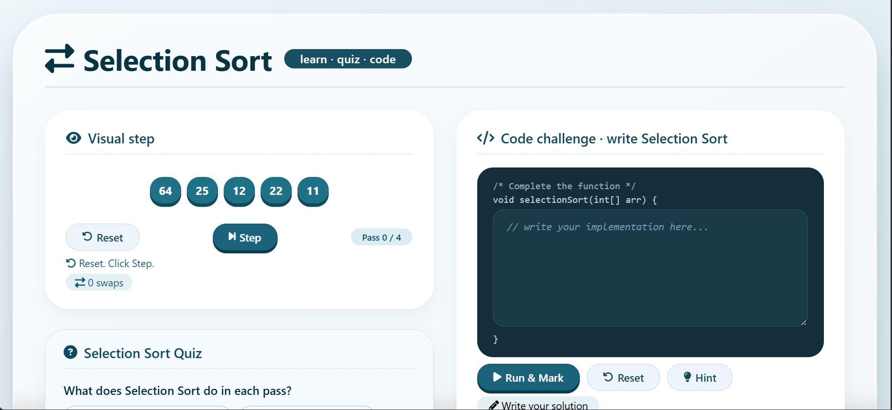

01 Overview
Technology played an important role in my tutoring activities by helping me present information clearly, engage students through interactive activities, and demonstrate technical concepts in a practical way. As a tutor for Information Systems III, I used Microsoft PowerPoint and online quizzes as part of my tutorial sessions. I also used interactive Data Structures visualisation tools when I volunteered to assist students in Technical Programming 2.
The use of these technologies helped me move beyond traditional explanations and create more engaging learning experiences for students. It also allowed me to apply my Applications Development skills in an educational environment.
02 PowerPoint Presentations
I used Microsoft PowerPoint to prepare and deliver presentations during my tutorial sessions. PowerPoint helped me organise tutorial content into clear sections and present important concepts using headings, examples, diagrams, and structured explanations.
For Information Systems III, this was particularly useful when explaining topics that contained several concepts, such as project management, database design, normalization, advanced SQL, transaction management, and Distributed Database Management Systems.
Using presentations also helped me maintain a clear structure during my tutorials. I could introduce the topic, explain the main concepts, provide examples, and then move to activities or questions to check students' understanding.


03 Online Quizzes & Interactive Assessment
I also incorporated online quizzes into my tutorials to make the sessions more interactive. After covering a topic, I used quizzes to allow students to test their understanding and recall important concepts.
The quizzes provided a simple way to move from teaching to active participation. Instead of only asking students whether they understood the topic, I could give them questions that required them to apply what they had learned.
The quizzes were also useful for identifying areas where students were struggling. When students experienced difficulty with a particular question or concept, I could revisit that area and provide another explanation or example.
This approach encouraged students to participate actively and helped reinforce the content covered during the tutorial.

Instead of only asking students whether they understood the topic, I could give them questions that required them to apply what they had learned.
04 Interactive Data Structures Visualisation
When I volunteered to assist students with Technical Programming 2, particularly during the Data Structures section, I used interactive visualisation tools to demonstrate sorting algorithms.
These tools allowed students to see how the elements change positions as the algorithms compare and arrange them. Instead of explaining the algorithms only through code or written examples, the visualisations provided a step-by-step representation of what was happening.
The visual approach was particularly useful when explaining concepts such as comparisons, swaps, iterations, and the overall process followed by each sorting algorithm.

Bubble Sort
Visualise adjacent-element comparison and swapping. Students can step through each pass, watch values move, and see the pass count update as the largest unsorted value bubbles to its final position.
Open visualiser
Insertion Sort
Show how elements are inserted into a growing sorted sub-list. The step counter tracks shifts, making it easy for students to see how early elements stay in place while later ones move into position.
Open visualiser
Selection Sort
Demonstrate the find-the-minimum-then-swap pattern. The visualiser highlights the current minimum candidate and tracks swaps, so students can see the algorithm reduce the unsorted region by one per pass.
Open visualiserThese resources also allowed me to connect my own Applications Development skills with tutoring by using software I developed as a learning resource for other students.
05 How Technology Improved My Tutorials
The integration of technology improved my tutorial sessions in several ways:
Improved Explanation
PowerPoint allowed me to present information in a structured and organised manner, making it easier for students to follow the lesson.
Increased Participation
Online quizzes encouraged students to participate rather than only listening to the tutor.
Immediate Reinforcement
Quizzes allowed students to apply what they had just learned and identify areas that needed further attention.
Visual Learning
The Data Structures visualisers helped students see how algorithms operate step by step, making abstract programming concepts easier to understand.
Practical Application
Using interactive tools helped connect theoretical knowledge with practical examples.
Better Engagement
Technology made the tutorials more interactive and helped maintain students' attention during learning activities.
Development of My Own Skills
Integrating technology into tutoring strengthened my communication, presentation, technical, and problem-solving skills. It also gave me an opportunity to use my development knowledge to support other students.
06 Reflection on Technology Integration
My experience has shown me that technology is most effective when it is used with a clear learning purpose. I did not use technology simply for the sake of using it. Instead, I selected tools based on what would help students understand and engage with the content.
PowerPoint supported the presentation of information, online quizzes supported assessment and participation, and the Data Structures visualisers supported practical understanding of algorithms.
Overall, integrating technology into my tutoring helped me create more engaging and interactive learning experiences. It also demonstrated how my skills as an Applications Development student can be used beyond software development, particularly in creating and using digital solutions that support teaching and learning.